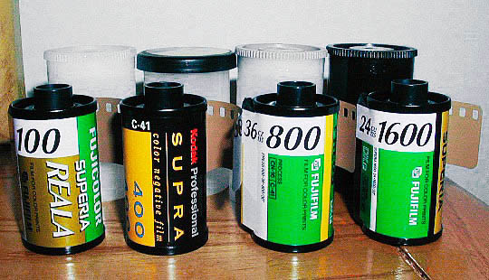
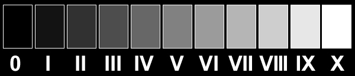

|
Camera (very) FundamentalsVersion 3.1, page 2, © 2002, 2006, 2009 by Dale Cotton, all rights reserved Lesson One: ISO and EVThe F2 used film to record images instead of the photo-electronic sensor found in digital cameras. It will be easier to explain ISO by talking about film instead of sensors (unless of course you really want to delve into the inner workings of photo-diodes, programmable gain amplifiers, etc ... I thought not).  Fig. 3: 35mm films with various ISO ratings Film is light sensitve. You may know that if you take a roll of film and pull the film out of the spool in daylight it will be ruined. That's because it only takes a small dose of light to do the job. Exactly how small a dose is specified by the ISO (International Standards Organization) number of the film. The higher the ISO number of the film, the less light it takes to put a picture on it. Drug store film typically comes in ISO ratings of 100, 200, and 400, for example. ISO 400 film needs only half the amount of light that ISO 200 film needs to get a clear picture on the film. ISO 100 film needs twice the amount of light that ISO 200 needs. So why do we need different ISO film? Higher ISO film, such as 400, gets the picture on film in very short times. This lets us work in dimmer light or hand-hold the camera instead of using a tripod in brighter light. The trade-off is that 400 ISO film is grainier than 100 ISO film, and the more you enlarge the picture the more the grain becomes visible and the more fine detail is obliterated by grain. So the higher the ISO number, the more grain and less detail you get. Digital: Digital cameras have ISO sensitivity options just like film. With a digital camera you choose the ISO setting with a dial or menu choice rather than by switching to a different film. Technically, increasing ISO digitally is a matter of stepping up the gain on the signal. The same 100, 200, 400, etc. sequence is commonly used in digital cameras. In digital imaging the higher ISO numbers introduce visual noise, or speckling. This is technically not grain but it obliterates detail just as effectively. The dose of light needed to produce an image on a particular film (or sensor in a digital camera) is called the exposure value (EV). Light is made up of extremely tiny particles called photons. Let's say the correct exposure for ISO 100 film frame is 100 gadzillion photons. In that case, it would take exactly 50 gadzillion photons to correctly expose an ISO 200 film frame, 25 gadzillion photons to correctly expose an ISO 400 film frame, etc. But why ISO ratings like 100, 200, 400 and not 100, 110, 120? This was probably determined by trial and error. However, we now know it is based on the physiology of human optics. To understand exposure values a bit better, consider the following chart:  Fig. 4: Ten equal increases in brightness from pure black (0) to pure white (X) Most of the scenes in real life contain areas in each of these eleven shades of brightness. The very deepest shadow areas may appear pure black, there may be very dark but not quite pure black shadows as well, etc. (Don't be fooled by the fact that the above chart only shows shades of grey. We could just as well have shown shades of green from darkest to lightest, or shades of red, etc. Here's yellow.) Key fact: It takes a doubling of the actual brightness of light for us to perceive a single step in apparent brightness. Each step going from left to right in Fig. 4 reflects twice the number of photons as the one before it but produces only a 1/10th increase in apparent brightness. (If our eyes didn't work this way we'd either be blinded by the glare of a sunny day or be permanently unable to see indoors.) Doubling and halving brightnesses (exposure values) is the heart of photography. Simple, tidy, and easy. Now, taking this back to ISOs – at each ISO speed we can record the entire range of brightnesses from pure black to pure white. It just takes half the amount of light to do so each time we double the ISO number. So if we go from 400 ISO 400 to 800 ISO, we can record the same range of brightnesses from pure black to pure white using just half the amount of light (but, again, we lose more detail and get a grainier image when we do so). Your turn: If your camera has an all-manual mode (usually M on the mode dial, set your camera to the lowest ISO and switch to manual mode. Point your camera at a blank wall, then any combination of shutter and aperture settings that yield a fairly dim image on the camera's LCD monitor. Double the ISO setting and notice how that affects the brightness of the wall on the monitor, Continue doubling the ISO and observing the change on the monitor. |
| - 2 - |
{kind=link}